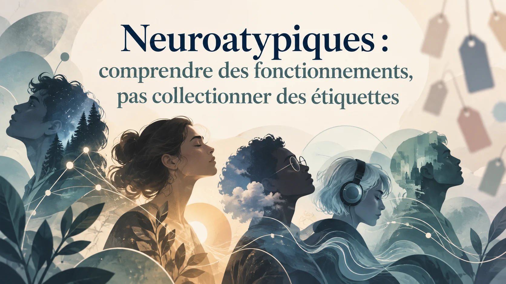

Ce texte reprend et développe un article initialement conçu pour LinkedIn. Il est désormais hébergé directement sur Les Esprits Pluriels afin de rester accessible sans compte externe.
Un repère n’est pas une personne
Les mots servent à repérer des réalités. Ils deviennent moins utiles lorsqu’ils prétendent résumer une personne entière. « Autiste », « TDAH », « dys », « HPI », « hypersensible » ou « neurodivergent » ne décrivent ni le même type de réalité, ni le même niveau d’information. Certains termes correspondent à des diagnostics cliniques, d’autres à des mesures psychométriques, d’autres encore à des usages communautaires ou à des descriptions d’expérience.
Le problème commence lorsque ces catégories sont mises sur un même plan. On finit alors par comparer des objets qui n’ont pas la même fonction. Un diagnostic peut orienter un soin ou ouvrir un droit. Un score peut situer une performance dans une distribution. Un terme communautaire peut aider à mettre des mots sur un vécu. Chacun peut être utile, à condition de ne pas lui demander de tout expliquer.
Des catégories de nature différente
L’autisme, le TDAH et les troubles spécifiques des apprentissages appartiennent aux troubles du neurodéveloppement dans les classifications cliniques. Ils sont définis à partir d’un ensemble de caractéristiques, d’une histoire développementale et d’un retentissement. Le haut potentiel intellectuel occupe une autre place. Il relève principalement de la psychométrie et de cadres éducatifs ou de recherche, avec des critères variables selon les contextes.
Le terme « neurodivergent » est encore différent. Il sert généralement à désigner un fonctionnement qui s’écarte des normes dominantes, sans constituer en lui-même un diagnostic. La neurodiversité, elle, décrit d’abord la diversité des fonctionnements neurologiques dans une population. Mélanger ces niveaux conduit vite à fabriquer une grande catégorie « neuroatypique » qui semble homogène alors qu’elle recouvre des réalités très différentes.
La même étiquette peut recouvrir des fonctionnements très différents
Deux personnes portant le même diagnostic peuvent avoir des besoins éloignés. L’une peut être surtout gênée par le bruit et les transitions. Une autre par les implicites sociaux. Une troisième par l’organisation, la mémoire de travail ou l’épuisement. L’étiquette donne un cadre. Elle ne remplace pas la cartographie du fonctionnement réel.
Cette hétérogénéité est particulièrement visible dans l’autisme. L’Organisation mondiale de la Santé rappelle que les capacités, les besoins de soutien et le niveau d’autonomie varient fortement d’une personne à l’autre et au cours de la vie. Une lecture utile doit donc tenir ensemble le diagnostic et la singularité du profil.
Les profils peuvent se recouvrir sans devenir interchangeables
Les frontières diagnostiques ne sont pas des cloisons étanches. L’autisme et le TDAH peuvent coexister. Les troubles dys présentent eux aussi des cooccurrences. Des capacités intellectuelles élevées peuvent masquer certaines difficultés ou permettre de les compenser pendant un temps. À l’inverse, une difficulté visible peut faire oublier des ressources importantes.
Les approches dimensionnelles et transdiagnostiques cherchent justement à mieux représenter ces recouvrements. Elles ne rendent pas les diagnostics inutiles. Elles rappellent qu’une catégorie ne suffit pas toujours à décrire l’intensité, la combinaison et la distribution des caractéristiques chez une personne donnée.
Quand l’étiquette aide, et quand elle enferme
Une catégorie est utile lorsqu’elle permet de comprendre une difficulté, préparer une évaluation, demander un aménagement, accéder à un service ou rencontrer des personnes ayant des expériences proches. Elle devient moins utile lorsqu’elle se transforme en scénario automatique.
Dire qu’une personne est TDAH ne permet pas de prédire sa créativité. Dire qu’elle est autiste ne dit pas à lui seul comment elle communique. Dire qu’elle est HPI ne renseigne pas automatiquement sur sa sensibilité, sa maturité émotionnelle ou sa trajectoire professionnelle. Plus on ajoute de caractéristiques supposées à une étiquette, plus on risque de remplacer l’observation par un portrait préfabriqué.
Partir du fonctionnement concret
Une lecture plus utile commence par des questions simples. Qu’est-ce qui facilite l’attention ? Qu’est-ce qui surcharge ? Comment la personne apprend-elle ? Quelles transitions coûtent le plus ? Les consignes implicites posent-elles problème ? Le bruit, la lumière, les interruptions ou les interactions sociales consomment-ils une part importante de l’énergie disponible ? Quels environnements permettent au contraire de fonctionner avec moins de compensation ?
Ces questions ne remplacent pas un diagnostic. Elles donnent une carte de travail. Elles permettent aussi d’éviter un piège fréquent : accumuler des étiquettes sans savoir ce qu’elles changent concrètement dans la vie quotidienne.
Une cartographie, pas une collection
Comprendre un profil neuroatypique revient moins à collectionner des mots qu’à relier plusieurs niveaux : caractéristiques neurodéveloppementales, capacités, stratégies de compensation, environnement, histoire personnelle, contraintes actuelles et besoins de soutien. Une même personne peut avoir des forces élevées dans un domaine et rencontrer des limites importantes dans un autre.
La diversité humaine ne disparaît pas quand un diagnostic est posé. Au contraire, le diagnostic devient réellement utile lorsqu’il aide à mieux lire cette diversité au lieu de l’effacer.
Sources principales
- Botha et al., 2024, histoire et développement collectif du concept de neurodiversité
- Organisation mondiale de la Santé, Autisme
- Revue 2025 sur les cadres dimensionnels et transdiagnostiques
- Étude populationnelle sur la dyslexie et les cooccurrences neurodéveloppementales
Sources vérifiées dans le cadre éditorial du site en septembre 2026.